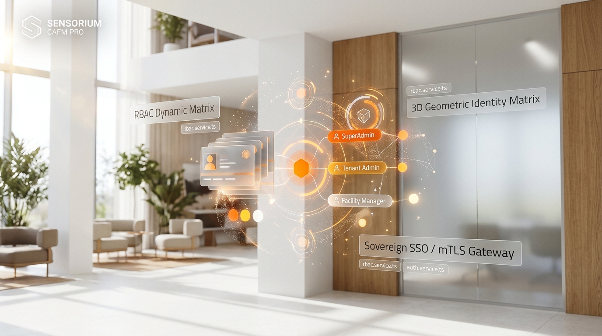
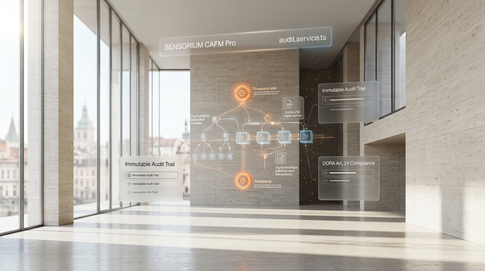

01 / IDENTITÉS
Chaque accès a
sa juste place.
Une matrice dynamique de rôles et de permissions pour organiser les responsabilités, cloisonner les environnements et maîtriser les accès sensibles.
RBAC · SSO · mTLSUne plateforme de supervision nouvelle génération qui connecte vos infrastructures, vos équipes et vos exigences de sécurité dans un environnement unique.

SENSORIUM CAFM PRO transforme la complexité opérationnelle en décisions lisibles. La plateforme rapproche la gestion des installations, les identités numériques et la preuve d'audit pour vous aider à garder le contrôle, à chaque instant.
Parlons de vos enjeux ↗Des briques complémentaires conçues pour protéger les accès, renforcer la gouvernance et rendre chaque action vérifiable.

Une matrice dynamique de rôles et de permissions pour organiser les responsabilités, cloisonner les environnements et maîtriser les accès sensibles.
RBAC · SSO · mTLSStructurez les rôles, les périmètres et les responsabilités avec une gouvernance claire et centralisée.
POLITIQUES · CONTRÔLESCentralisez les événements et facilitez les investigations grâce à une piste d'audit structurée et horodatée.
AUDIT TRAIL · TIMESTAMPPréparez vos contrôles avec des éléments de preuve accessibles, organisés et exploitables.
DORA · CONTRÔLE · PREUVEUne approche structurée de la sécurité, depuis l'authentification jusqu'à la conservation des événements, pour renforcer la résilience de vos opérations.
Rendez vos opérations plus lisibles et vos contrôles plus fluides grâce à une information structurée et contextualisée.
Identités, événements et éléments de preuve réunis dans une même logique de contrôle.
Les références réglementaires et fonctionnalités de conformité dépendent du périmètre fonctionnel, de la configuration et des contrôles effectivement déployés. SENSORIUM ne constitue pas, à lui seul, une certification réglementaire.
Présentez-nous votre environnement. Construisons ensemble une démonstration adaptée à vos enjeux opérationnels et de sécurité.
Demander une démonstration ↗ Réponse personnalisée · Présentation de la plateforme